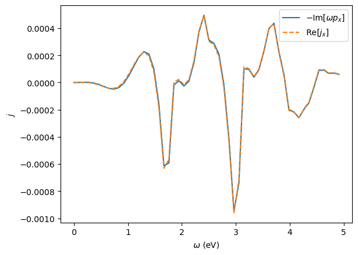
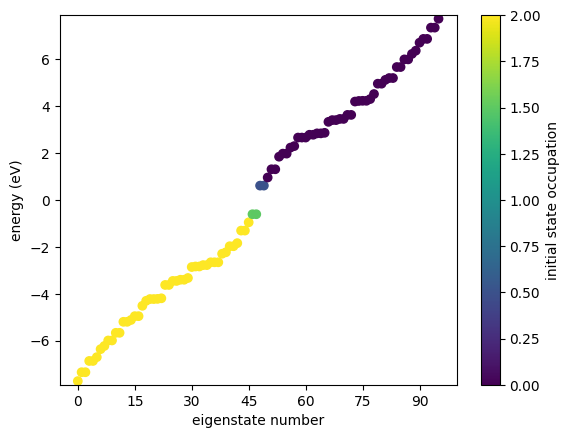

Time-Domain simulations
We introduce time-domain simulations, which are based on GRANAD's default master equation
The Hamiltonian is non-linear in the sense that the Coulomb term depends on the charge electronic distribution given by the time-dependent density matrix:
where
- \(h^{0}\) is the single-particle tight-binding Hamiltonian constructed from localized orbitals.
- \(\vec{P}\) is the dipole moment operator depending on lattice site positions \(\vec{r}\). Additonal dipole moment elements \(\vec{d}_{ij}\) between orbitals \(i\), \(j\) of the same site can be taken into account. This leads to an interatomic potential with unit charge \(e\), given by \(e \vec{E} \vec{r}\), and an intra-atomic potential \(\vec{E} \vec{d}\).
- \(\rho^{0}\) is the stationary density matrix representing the system's ground state, and \(C\) is the Coulomb matrix.
This expression is the dipole-gauge expression for the Hamiltonian including an external electric field \(\vec{E}\).
Observables
You can compute multiple observables in one simulation run
from granad import MaterialCatalog, Hexagon, Pulse
flake = MaterialCatalog.get("graphene").cut_flake( Hexagon(10) )
pulse = Pulse(
amplitudes=[1e-5, 0, 0], frequency=2.3, peak=5, fwhm=2
)
operators = [flake.dipole_operator, flake.velocity_operator]
result = flake.master_equation(
relaxation_rate = 1/10,
illumination = pulse,
expectation_values = operators,
end_time = 40,
)
RHS compiled
RHS compiled
49.99262428086739 %
100.0 %
The result object stores this information. Operators are concatenated in the order you passed them in.
1
(6780, 6)
The induced dipole moment at timestep 10 is given by
[5.33244283e-13+0.j 2.88818969e-14+0.j 0.00000000e+00+0.j]
Induced current at timestep 10
[ 1.44993249e-11+4.56137326e-15j -8.45204584e-15+7.90053023e-15j
0.00000000e+00+0.00000000e+00j]
We can access the Fourier transform as
omega_min, omega_max = 0, 5
omegas, pulse_omega = result.ft_illumination( omega_min = omega_min, omega_max = omega_max )
output_omega = result.ft_output( omega_min = omega_min, omega_max = omega_max )[0]
The incident field is accessible via result.td_illumination, e.g.,
(6780, 3)
Continuity equation example
From the classical continuity equation for the charge and current density \(\rho(\vec{r},t), \vec{j}(\vec{r},t)\) and dipole moment density \(\vec{p}(\vec{r},t)\), we have
After Fourier transformation, we obtain
Its integrated form is given by
\(\vec{j}(t)\) and \(\vec{p}(t)\) are the total current and dipole moment respectively and we have taken the spatially discrete basis into account. We can obtain operator expectation values directly from the time-domain simulations. The continuity equation above can be verified as follows
import matplotlib.pyplot as plt
p = -(omegas * output_omega[:,0]).imag
j = output_omega[:,3].real
plt.plot(omegas, p, label = r'$- \text{Im}[\omega p_x]$')
plt.plot(omegas, j, '--', label = r'$\text{Re}[j_x]$')
plt.xlabel(r'$\omega$ (eV)')
plt.ylabel(r'$j$')
plt.legend()
plt.show()

Density matrices
If we want to find the time-dependent density matrices, we can omit the operator list. The result object then contains a one-element list.
result = flake.master_equation(
relaxation_rate = 1/10,
illumination = pulse,
end_time = 40,
density_matrix = ["full"],
)
density_matrix = result.output[0]
print(density_matrix.shape)
RHS compiled
RHS compiled
49.99262428086739 %
100.0 %
(6780, 96, 96)
We can convert them to energy basis
(6780, 96, 96)
Occupations
To reduce memory consumption, we can extract only the site occupations to avoid storing the entire stack of density matices in memory.
result = flake.master_equation(
relaxation_rate = 1/10,
illumination = pulse,
density_matrix = ["occ_x"],
end_time = 40,
)
occ_x = result.output[0]
print(occ_x.shape)
RHS compiled
RHS compiled
49.99262428086739 %
100.0 %
(6780, 96)
Further reduction of the memory consumption can be controlled by the grid argument, which describes the density of the time domain sampling grid, explained in the API section on the master_equation method.
Energy occupations
Similarly to site occupations, energy occupations can also be obtained from the time-domain simulations.
Warning: this introduces additional cubic complexity
result = flake.master_equation(
illumination = pulse,
relaxation_rate = 1/10,
density_matrix = ["occ_e"],
end_time = 40,
)
occ_e = result.output[0]
print(occ_e.shape)
RHS compiled
RHS compiled
49.99262428086739 %
100.0 %
(6780, 96)
Initially excited states
GRANAD allows to set initially excited states by specifying the single-particle transition in the density matrix as follows

In case of degeneracies, GRANAD distributes electrons equally among all degenerate energy levels, as demonstrated in the figure above.
Combinations
We can also extract multiple quantities at the same time
result = flake.master_equation(
relaxation_rate = 1/10,
density_matrix = ["full", "occ_x"],
expectation_values = [flake.dipole_operator],
end_time = 40,
illumination = pulse,
)
RHS compiled
RHS compiled
49.99262428086739 %
100.0 %
The output will now contain three arrays: induced dipole moments, site occupations and full density matrices
print(len(result.output))
print(result.output[0].shape) # by default, operators come first
print(result.output[1].shape) # we specified ["full", "occ_x"] => full density matrices
print(result.output[2].shape) # we specified ["full", "occ_x"] => site occupations
3
(6780, 3)
(6780, 96, 96)
(6780, 96)
EPI
The energy-based plasmonicity index introduced by Müller et al. is a quantity to characterize the steady-state plasmonicity. We use plane wave illumination to drive the system into a steady state and then compute the EPI.
import jax.numpy as jnp
from granad import Wave
omega = 2.5 # we pick the approximate resonance at 2.5
res = flake.master_equation(
relaxation_rate = 1/10,
illumination = Wave(frequency = omega, amplitudes = [1e-5, 0, 0]),
end_time = 40)
# numerical broadening parameter of 0.05 eV
epsilon = 0.05
# print and compute the EPI
print(flake.get_epi(res.final_density_matrix, omega = omega, epsilon = epsilon))
RHS compiled
RHS compiled
49.99262428086739 %
100.0 %
0.8492060922782898
diffrax solver adjusts the simulation parameters automatically
depending on the initial values of physical parameters. Running stable calculations might require
some fine-tuning. Example scripts providing working setups are provided here.